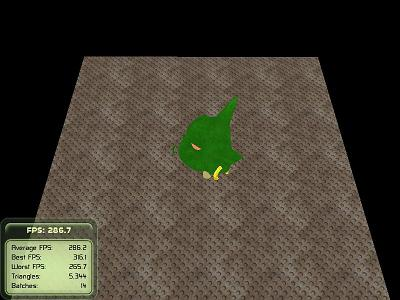
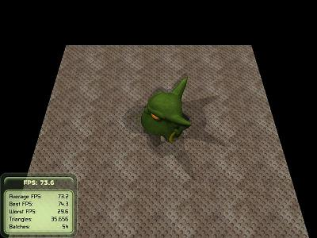
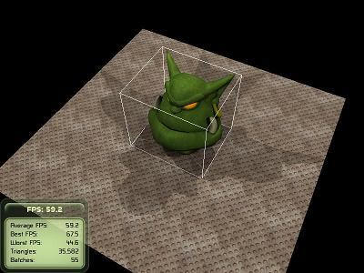
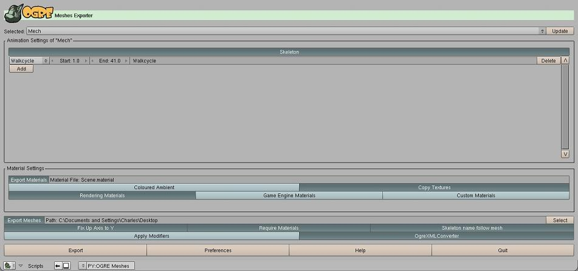
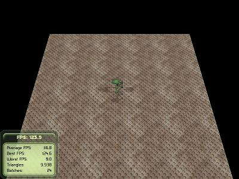
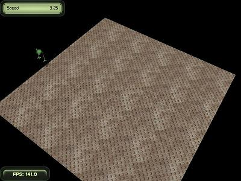

class MechWalkTest : public BaseApplication
{
public:
MechWalkTest(void);
virtual ~MechWalkTest(void);
protected:
virtual void createViewports(void);
virtual void createCamera(void);
virtual void createScene(void);
Ogre::SceneNode* mMechNode;
};
#endif // #ifndef __MechWalkTest_h_
</div>
Here are the implementations of the three new methods. Most of the
details are available in the
third
basic tutorial on the wiki. It is worth noting that the camera is
its own object in Ogre3D and can be moved around as the program runs -
we will do this in a later step.
void MechWalkTest::createViewports(void)
{
Ogre::Viewport* vp = mWindow->addViewport(mCamera);
vp->setBackgroundColour(Ogre::ColourValue(0,0,0));
mCamera->setAspectRatio(Ogre::Real(vp->getActualWidth()) / Ogre::Real(vp->getActualHeight()));
}
void MechWalkTest::createCamera(void)
{
mCamera = mSceneMgr->createCamera("PlayerCam");
mCamera->setPosition(Ogre::Vector3(150, 200, 0));
mCamera->lookAt(Ogre::Vector3(0,0,0));
mCamera->setNearClipDistance(5);
mCameraMan = new OgreBites::SdkCameraMan(mCamera);
}
void MechWalkTest::createScene(void)
{
Ogre::Entity* mechEntity = mSceneMgr->createEntity("Head", "ogrehead.mesh");
mMechNode = mSceneMgr->getRootSceneNode()->createChildSceneNode();
mMechNode->attachObject(mechEntity);
mechEntity->setCastShadows(true);
mSceneMgr->setAmbientLight(Ogre::ColourValue(1.0, 1.0, 1.0));
Ogre::Plane plane(Ogre::Vector3::UNIT_Y, 0);
Ogre::MeshManager::getSingleton().createPlane("ground", Ogre::ResourceGroupManager::DEFAULT_RESOURCE_GROUP_NAME,
plane, 200, 200, 20, 20, true, 1, 5, 5, Ogre::Vector3::UNIT_Z);
Ogre::Entity* entGround = mSceneMgr->createEntity("GroundEntity", "ground");
mSceneMgr->getRootSceneNode()->createChildSceneNode()->attachObject(entGround);
entGround->setMaterialName("Examples/BumpyMetal");
entGround->setCastShadows(false);
}
Running this program should create the scene below. Press escape to end
the program.

</li>
In the previous step there are no lights set up, instead the program
uses ambient lighting (with the line
`mSceneMgr->setAmbientLight(Ogre::ColourValue(1.0, 1.0, 1.0));`). This
means that the light in the scene comes from all directions at once;
this is the reason there are no shadows despite setting the head to cast
them (`mechEntity->setCastShadows(true);
`). The
third
basic tutorial on the wiki details lights too, but we are going to
do something slightly different here. Add the method definition below to
the header.
private:
void addSpotlight(const Ogre::String name, const Ogre::Real xPos, const Ogre::Real zPos);
Below is the implementation of the new method. It sets up a plain
white-light spotlight pointing back to the head at the designated X and
Z position. The spotlight is set up with a very wide range, by the line
`spotLight->setSpotlightRange(Ogre::Degree(180), Ogre::Degree(180));`.
This is the angle of the spotlight - 180 is very wide, but I did this to
ensure the spotlights overlap and leave no dark spots. Also, the
attenuation is set with
`spotLight->setAttenuation(500.0f, 1.0f, 0.007f, 0.0f);`. This defines
how the light weakens over distance. The
full
definition is in the Ogre3D API, but this line says that the
spotlight should weaken slowly to nothing after distance of 500 from the
light - try playing with the parameters and see what happens.
void MechWalkTest::addSpotlight(const Ogre::String name, const Ogre::Real xPos, const Ogre::Real zPos)
{
Ogre::Light* spotLight = mSceneMgr->createLight(name);
spotLight->setType(Ogre::Light::LT_SPOTLIGHT);
spotLight->setDiffuseColour(1.0, 1.0, 1.0);
spotLight->setSpecularColour(1.0, 1.0, 1.0);
spotLight->setDirection(-xPos/xPos, -1, -zPos/zPos);
spotLight->setPosition(xPos, 250.0, zPos);
spotLight->setAttenuation(500.0f, 1.0f, 0.007f, 0.0f);
spotLight->setSpotlightRange(Ogre::Degree(180), Ogre::Degree(180));
}
Now change the line setting the ambient light in `createScene` to the
below. Note that the ambient light is now turned to black. If this is
not done there still seems to be some ambient light as the shadows
disappear. `Ogre::SHADOWTYPE_STENCIL_ADDITIVE` is the medium detail
shadow setting and works well for me - try out the others
`SHADOWTYPE_TEXTURE_MODULATIVE` and `SHADOWTYPE_STENCIL_ADDITIVE`.
// Set lights
mSceneMgr->setAmbientLight(Ogre::ColourValue(0.0, 0.0, 0.0));
mSceneMgr->setShadowTechnique(Ogre::SHADOWTYPE_STENCIL_ADDITIVE);
addSpotlight("spotLight1", 250.0, 0);
addSpotlight("spotLight2", 0, -250.0);
addSpotlight("spotLight3", 0, 250.0);
addSpotlight("spotLight4", -250.0, 0);
With the changes made above, running the program should look like the
below. The head is a lot more detailed now, but the frame rate has also
dropped considerably. That is the general tradeoff - speed for detail.

Next we will make the camera swing around the scene depending on user
input. To do this unbuffered input will be processed (see
basic
tutorial 4 for more details). In this way if the user keeps a key
pressed then the camera will keep moving, rather than just processing
the initial key press and then stopping (like for buffered input).
Update the header file so that the `protected` and `private` sections
look as below. The three new variables define the camera movement:
`mOrbitRadius` is the radius of the circle the camera will swing around,
`mOrbitIncrementRadians` is the angle each key press will move the
camera, and `mCameraAngle` is the angle of the camera on the circle
defined by `mOrbitRadius` (that is, `mCameraAngle` will increase or
decrease by `mOrbitIncrementRadians` as the camera swings around the
scene). Two new functions are also added, `processUnbufferedInput` will
swing the camera depending on which key is pressed, while
`frameRenderingQueued` is called every time a frame is about to be
rendered to the screen.
protected:
virtual void createScene(void);
virtual void createCamera(void);
virtual void createViewports(void);
virtual bool frameRenderingQueued(const Ogre::FrameEvent& evt);
Ogre::Real mOrbitRadius;
Ogre::Real mOrbitIncrementRadians;
Ogre::Real mCameraAngle;
Ogre::SceneNode* mMechNode;
private:
bool processUnbufferedInput(const Ogre::FrameEvent& evt);
void addSpotlight(const Ogre::String name, const Ogre::Real xPos, const Ogre::Real zPos);
Initialise the new variables in the constructor. The larger the
`mOrbitIncrementRadians` value the faster the camera will swing.
MechWalkTest::MechWalkTest(void):
mCameraAngle(0.0f),
mOrbitRadius(150.0f),
mOrbitIncrementRadians(Ogre::Math::PI/250)
{
}
The `frameRenderingQueued` method will direct any input to the new
`processUnbufferedInput` method after first letting the base class do
any frame processing it requires. This method is only called because the
base class is set up as a frame listener (as described in basic tutorial
4).
bool MechWalkTest::frameRenderingQueued(const Ogre::FrameEvent& evt)
{
bool ret = BaseApplication::frameRenderingQueued(evt);
if (!processUnbufferedInput(evt)) return false;
return ret;
}
Now we swing the camera. If the Z key is pressed the camera will swing
clockwise by `mOrbitIncrementRadians` and if the X key is pressed it
will swing anti-clockwise by `mOrbitIncrementRadians`, the resulting
position stored in `mCameraAngle`. If you remember your trigonometry,
there are 0 to 2xPI radians in a circle, so `mCameraAngle` is checked to
ensure it won’t exceed these bounds. Then the angle is changed and the
camera moved to its new position with `mCamera->setPosition()` based on
that angle. Then as the camera moves around the circle the angle it
points needs to change so that it stays pointing at the centre of the
scene. Thus as the camera swings `mOrbitIncrementRadians`, it is twisted
`mOrbitIncrementRadians` in the opposite direction with
`mCamera->yaw()`.
bool MechWalkTest::processUnbufferedInput(const Ogre::FrameEvent& evt)
{
if (mKeyboard->isKeyDown(OIS::KC_Z)) {
if (mCameraAngle==2*Ogre::Math::PI) mCameraAngle = 0;
mCameraAngle+=mOrbitIncrementRadians;
mCamera->setPosition(Ogre::Vector3(mOrbitRadius*Ogre::Math::Cos(mCameraAngle),200,mOrbitRadius*Ogre::Math::Sin(mCameraAngle)));
mCamera->yaw(Ogre::Radian(-mOrbitIncrementRadians));
} else if (mKeyboard->isKeyDown(OIS::KC_X)) {
if (mCameraAngle==0) mCameraAngle = 2*Ogre::Math::PI;
mCameraAngle-=mOrbitIncrementRadians;
mCamera->setPosition(Ogre::Vector3(mOrbitRadius*Ogre::Math::Cos(mCameraAngle),200,mOrbitRadius*Ogre::Math::Sin(mCameraAngle)));
mCamera->yaw(Ogre::Radian(mOrbitIncrementRadians));
}
return true;
}
Running this now could well result in a jump the first time the Z or X
keys are pressed. This is because we set the original position of the
camera without regard to the circle just implemented. To fix this in
`createCamera()` change the line setting the initial position to the
below.
mCamera->setPosition(Ogre::Vector3(mOrbitRadius*Ogre::Math::Cos(mCameraAngle),200,mOrbitRadius*Ogre::Math::Sin(mCameraAngle)));
While swinging the camera around it becomes clear that the head at the
centre of the scene is not properly sitting on the bumpy metal surface.
Instead it seems to be embedded half above and half below the plane.
This is because we didn’t set a position for the head so it has been
positioned at the origin (0,0,0) and Ogre3D places meshes based on their
centre. This is easy to fix. Just add the two lines below to
`createScene()` after the `mMechNode` has been initialised. The code
gets the bounding box of the mesh, then one of its bottom points and
moves the whole mesh up by the same distance this point is below the
origin, thus making it “sit” on the plane. Remember with Ogre3D the Y
axis is the vertical axis - the horizontal plane is defined by the X & Z
axes.
Ogre::AxisAlignedBox box = mechEntity->getBoundingBox();
mMechNode->setPosition(0, -box.getCorner(Ogre::AxisAlignedBox::FAR_LEFT_BOTTOM).y, 0);
It might be useful to use the `mMechNode->showBoundingBox(true);` method
to draw the bounding box on the scene so the position of the mesh can be
easily seen. The screenshot below is the head after it has been shifted
up and with its bounding box displayed. If the bounding box is not
enough, logging can be used to write information to the `ogre.log` file
(located in the directory the program was run). Logging is done with the
method call
`Ogre::LogManager::getSingleton().logMessage("mesh height= "+Ogre::StringConverter::toString(box.getSize().y));`.
Note that numbers and the like need to be converted to strings.

Update: Since writing this I have discovered that the bounding
box returned needs to be scaled by the scale of the node. That is the
bounding box of the entity may be a different size to the node,
depending on scale. The example here works because the scale is 1 and
thus the entity and node are the same size. If there is a line like
`mMechNode->setScale(1.0f, mScale, 1.0f);` (ie the node is scaled by
`mScale` on the y axis), then the code to properly position the node
should be
`mMechNode->setPosition(0, -box.getCorner(Ogre::AxisAlignedBox::FAR_LEFT_BOTTOM).y*mScale, 0);`.
With the head displaying nicely it is time to replace it with the mech.
Before loading the mech into Ogre3D, it first needs to be exported from
Blender into a format Ogre3D can understand. Luckily there is a tool to
do this. Python will need to be installed for Blender so if you haven’t
already, go here and download & install
the version appropriate for your version of Blender (Blender will
normally say what version of python it expects on startup - or if it is
already installed). The
exporter can be found
here, the command line tools available on the same page are also
required - download both and follow the installation instructions. After
a restart, Blender should now have a new option called OGRE Meshes under
File~~Export. Select the mech and choose
this menu option, the panel below should appear. The Export button will
write the mech mesh out in Ogre’s format~~ although I recommend
checking the help and preferences first.

I discovered a few things when exporting the mech Blender mesh:
-
It is a good idea to provide the path to OgreXMLConvertor in the
preferences. This should have been installed as part of the command line
tools.
-
The exporter can be a little picky with textures (see the help). None of
the textures on the original mech worked well so I removed them all and
just left the basic flat green texture.
-
Animation can be hard to control if the mesh moves too far from its
original location as part of the animation. I removed the master bone
keys from the Walkcycle animation so that the mech walked on the spot,
then I put one key back at the start so that there was no jump when the
mech began walking.
-
Make sure your mesh, skeletons and materials have meaningful names.
-
The exporter does not like small faces. The bevels on the original mech
were too small, so with the mech selected in edit mode I used Remove
Doubles (on the Mesh Tools subpanel) with various tolerances to remove
them.
-
Ogre3D will only draw faces with suitable normals - ensure all the
normals on your mesh face outwards. This was a problem with some of the
faces in the mech’s toes. To see the normals press the Draw Normals
button on the Mesh Tools More subpanel of the Editing panel. When you
see a normal that is not pointing out, select that face and press
W-\>Flip Normals.
The original model is available
here and the model resulting from the above steps is
available in the source download in this
tutorial.
Update: Since writing this tutorial I have
discovered the reason the Ogre exporter is picky with textures is
because I did them wrong in Blender. Instead of having multiple
materials for the mesh and textures applied to just a few faces, there
should be a single material for the entire mesh and textures should be
images applied to all the faces. Also normal maps should not be black
and white, but a special colour scheme. See the
spaceship tutorial for a better
way of texturing if the goal is using your model in a game.
Create a folder next to the source and call it `resources`. Put the
`.mesh`, `.skeleton` and `.material` files created by the export into
this folder. Then in the `resources.cfg` file add the line
`FileSystem=../../resources`, or where ever the files from the Blender
export were placed. Now Ogre3D should be able to find the mesh. In
`createScene()` replace the code
`mSceneMgr->createEntity("Head", "ogrehead.mesh");` with
`mSceneMgr->createEntity("Mech", "Mech.mesh");` and the mech should
appear, like below.

The mech should appear green. If it appears grey then this might be
because there are no lights set up and ambient lighting is being used
instead. The exporter seems to set the ambient color (the color the mech
appears under ambient lighting) of the mech to grey (see the
`.materials` file). However the diffuse and specular colors are correct
so under lighting the mech looks fine.
To make the mech walk its animation state needs to be set. In the header
file add the new protected variable
`Ogre::AnimationState *mAnimationState;`. Then in `createScene()` add
these lines after the code positioning the mech mesh. This will tell the
mech mesh to use the Walkcycle animation in a loop.
mAnimationState = mechEntity->getAnimationState("Walkcycle");
mAnimationState->setLoop(true);
Finally, add the lines below to the top of `frameRenderingQueued()`. The
`addTime` call adds the amount of time since the last frame was drawn to
the animation so it seems to walk along at the correct speed no matter
the frame rate.
mAnimationState->setEnabled(true);
mAnimationState->addTime(evt.timeSinceLastFrame);
Running the program now will result in the mech walking on the spot.
To get the mech moving we will use a speed setting. The up arrow key
will increase speed up to a maximum, the down arrow key will decrease
speed. When speed is non-zero the left and right arrow keys will turn
the mech. To start with, here are the changes to the header. There are a
few new variables to store the mech’s speed and direction.
protected:
virtual void createFrameListener(void);
virtual bool frameRenderingQueued(const Ogre::FrameEvent& evt);
virtual void createScene(void);
virtual void createCamera(void);
virtual void createViewports(void);
virtual bool keyPressed(const OIS::KeyEvent &arg);
Ogre::Real mOrbitRadius;
Ogre::Real mOrbitIncrementRadians;
Ogre::Real mCameraAngle;
Ogre::Real mMechDirection;
Ogre::Real mSpeed;
Ogre::Real mSpeedChange;
Ogre::SceneNode* mMechNode;
OgreBites::ParamsPanel* mSpeedPanel;
Ogre::AnimationState *mAnimationState;
In the constructor set the initial vales.
MechWalkTest::MechWalkTest(void):
mSpeed(0.0f),
mCameraAngle(0.0f),
mOrbitRadius(150.0f),
mOrbitIncrementRadians(Ogre::Math::PI/250),
mMechDirection(Ogre::Math::PI/2),
mSpeedChange(0.25)
{
}
By using the arrow keys for movement we are clashing with the keys used
in the base application. Override the superclass’s `keyPressed` method
to ignore its key processing.
bool MechWalkTest::keyPressed( const OIS::KeyEvent &arg )
{
return true; //BaseApplication::keyPressed(arg);
}
The mech’s speed will be hard for the user to determine if it is not
displayed. So in the `createFrameListener` method we will place a panel
to display the speed in the top left corner. This method is called once
as the base application registers as a frame listener. Ensure that the
method overridden in the superclass is called first as it does some
setup this application requires. The last line makes the frame
statistics panel much smaller, so that it just shows the current frame
rate.
void MechWalkTest::createFrameListener(void)
{
BaseApplication::createFrameListener();
Ogre::StringVector items;
items.push_back("Speed");
mSpeedPanel = mTrayMgr->createParamsPanel(OgreBites::TL_NONE, "", 200, items);
mTrayMgr->moveWidgetToTray(mSpeedPanel, OgreBites::TL_TOPLEFT, 0);
mSpeedPanel->show();
mTrayMgr->toggleAdvancedFrameStats();
}
In the `processUnbufferedInput` method add the following code before the
`return`. The first `if..else..` increases or decreases the mech’s speed
within its bounds. The second `if..else..` turns the mech left or right
if it is moving - it uses yaw to actually turn the mech. The last `if`
ends the program if the escape key is pressed - this is done because the
code to do it in the base class is in the now overridden `keyPressed`
method.
if (mKeyboard->isKeyDown(OIS::KC_UP)) {
if (mSpeed<10) mSpeed+=mSpeedChange;
} else if (mKeyboard->isKeyDown(OIS::KC_DOWN)) {
if (mSpeed>0) mSpeed-=mSpeedChange;
}
if (mSpeed>0) {
if (mKeyboard->isKeyDown(OIS::KC_RIGHT)) {
mMechDirection += mOrbitIncrementRadians;
mMechNode->yaw(Ogre::Radian(-mOrbitIncrementRadians));
} else if (mKeyboard->isKeyDown(OIS::KC_LEFT)) {
mMechDirection -= mOrbitIncrementRadians;
mMechNode->yaw(Ogre::Radian(mOrbitIncrementRadians));
}
}
if (mKeyboard->isKeyDown(OIS::KC_ESCAPE)) {
mShutDown = true;
}
Now we just need to actually move the mech. In `frameRenderingQueued`
add the following code to the top of the method. It states that if the
mech is moving the walk animation should be turned on and progressed
forward depending on the speed. If speed is 0 then turn the animation
off as the mech is not moving. The call to `translate` does the actual
moving. Here a vector defining the unit movement is created and then
multiplied by the speed (so the mech moves further the faster it goes)
and the time since the last frame (so the distance moved is steady
despite changes in frame rate). The constants are used to make the
movement look better and have the animation tie up with the actual
translated distance. The last line sets the current speed in the speed
panel created in `createFrameListener`.
if (mSpeed>0) {
mAnimationState->setEnabled(true);
mAnimationState->addTime(evt.timeSinceLastFrame * mSpeed/5);
mMechNode->translate(Ogre::Vector3(Ogre::Math::Cos(mMechDirection),0,Ogre::Math::Sin(mMechDirection)) * mSpeed * evt.timeSinceLastFrame * 2.5);
} else {
mAnimationState->setEnabled(false);
}
mSpeedPanel->setParamValue(0, Ogre::StringConverter::toString(mSpeed));
With the code above added the program now looks like the below.

Note that in the previous step there is nothing to stop the mech walking
off the bumpy metal plane or even the screen. Bounds need to be set. Add
the new private method
`void checkBounds(const Ogre::Vector3& position);` to the header and
call it just after the translate in `createFrameListener` with the line
`checkBounds(mMechNode->getPosition());`. The method itself is below. It
just checks to see if the position of the mech is outside the bounds of
the bumpy metal plane and if so, stops it moving and twists it to face
in the opposite direction.
void MechWalkTest::checkBounds(const Ogre::Vector3& position)
{
Ogre::Vector3 newPosition(position.x, position.y, position.z);
Ogre::Real mPlaneSize = 200;
bool changed = false;
if (position.x>mPlaneSize/2){
newPosition.x = mPlaneSize/2;
changed = true;
} else if (position.x<-mPlaneSize/2) {
newPosition.x = -mPlaneSize/2;
changed = true;
}
if (position.z>mPlaneSize/2){
newPosition.z = mPlaneSize/2;
changed = true;
} else if (position.z<-mPlaneSize/2) {
newPosition.z = -mPlaneSize/2;
changed = true;
}
if (changed) {
mMechNode->setPosition(newPosition);
mAnimationState->setEnabled(false);
mMechNode->yaw(Ogre::Radian(Ogre::Math::PI));
mMechDirection = fmod(mMechDirection+Ogre::Math::PI, 2*Ogre::Math::PI);
mSpeed = 0;
}
}
That is it. The program now does what we set out to do. There is always
some cleaning up that can be done: adjusting the movement constants so
that the mech moves more believably; changing the size of the mech with
`mMechNode->setScale(1.1f, 1.1f, 1.1f);`; only putting the resources
actually used into the `resources.cfg` file; and a general code cleanup.
You can download all the code and resources
here.
In the second part of this tutorial
(available here), the program here is extended to a simple game
where you are faced with another mech in combat. It concentrates on Ogre
and the techniques for basic collision detection.